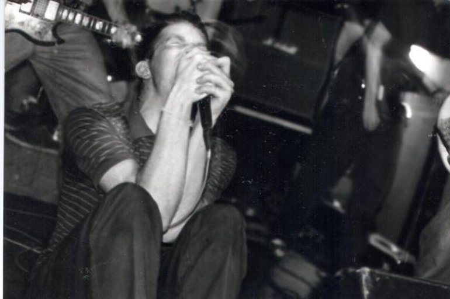

Легенды Британской сцены Боб Тилтон, начинали в 1993, в городе Ноттингем, еще до того как термин "имо", закрепился
на Туманном Альбионе. В том же году, группа записала песни для дебютного 7" EP, который был издан через год, лейблом
Subjugatio records тиражем 1000 копий.
Два следующих года для группы сложились вполне удачно, у Bob Tilton выходит вторая по счету семёрка, в 96 известный
персонаж Джон Пилл пригласил ребят записать сессию для своего шоу на BBC Radio One. Несколько месяцев спустя
Subjugation издали долгожданный и самый хитовый лонгплей группы.
На самом деле 96'ой был очень особенным временем, внутри независимой британской сцены, люди просто сходили с ума на
концертах, начиная от Spy Versus Spy и кончая Mogwai. Конечно же Bob Tilton были не исключением, лонгплей просто
разлетелся среди фанатов эмо и панка. На протяжении еще трёх лет группа рубилась на концертах по всей Британии,
вернувшись домой в декабре 1998 они записали свой второй альбом на лейбле Sousaphon Recordings, под названием The
Leading Hotels Of The World, вскоре после этого, барабанщик Алан Гейни переехал в Лондон, что послужило одной из
причин распада группы весной 1999 года.
После Боб Тилтон, вокалист Саймон Фирн пел в группе Wolves Of Greece, остольные участники замутили проект I Am
Spartacus. Гитарист Нейл Джонсон так же играл в Wolves Of Greece, сейчас он играет в группах Savoy Grand и Andy
Clambake & The Resurrection Men
Посетите
Discogs
Состав:
- Simon Feirn-vocals
- Neil Johnson-guitar
- Chay Lawrence-guitar(1994-1998)
- Ralph Hamilton-guitar(1994-1998)
- Mark Simms-bass
- Alan Gainey-drums
Дискография:
- 1994 - Wake Me When It's Springtime Again
- 1995 - Songs Of Penknife And Pocket Watch
- 1996 - Crescent
- 1998 - Bob Tilton & Reiziger Split
- 1999 - the leading hotels or the world